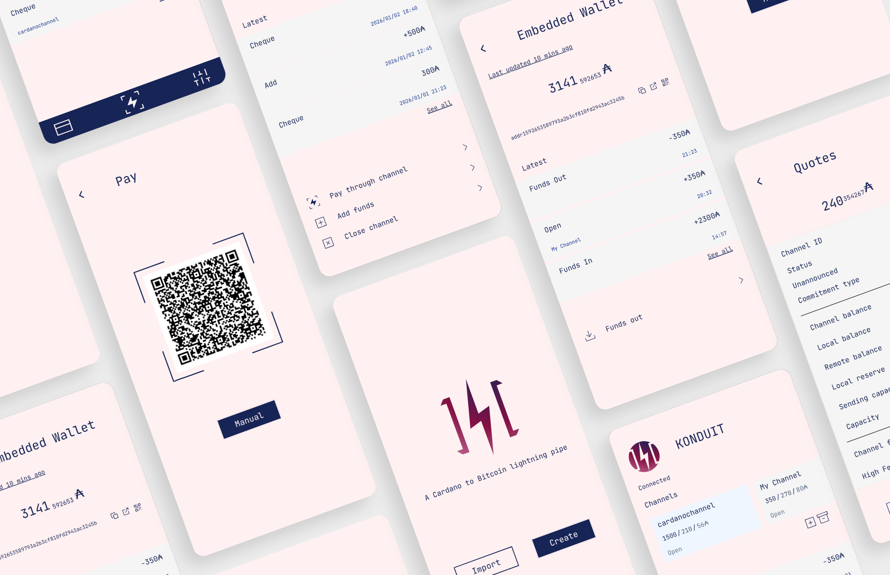
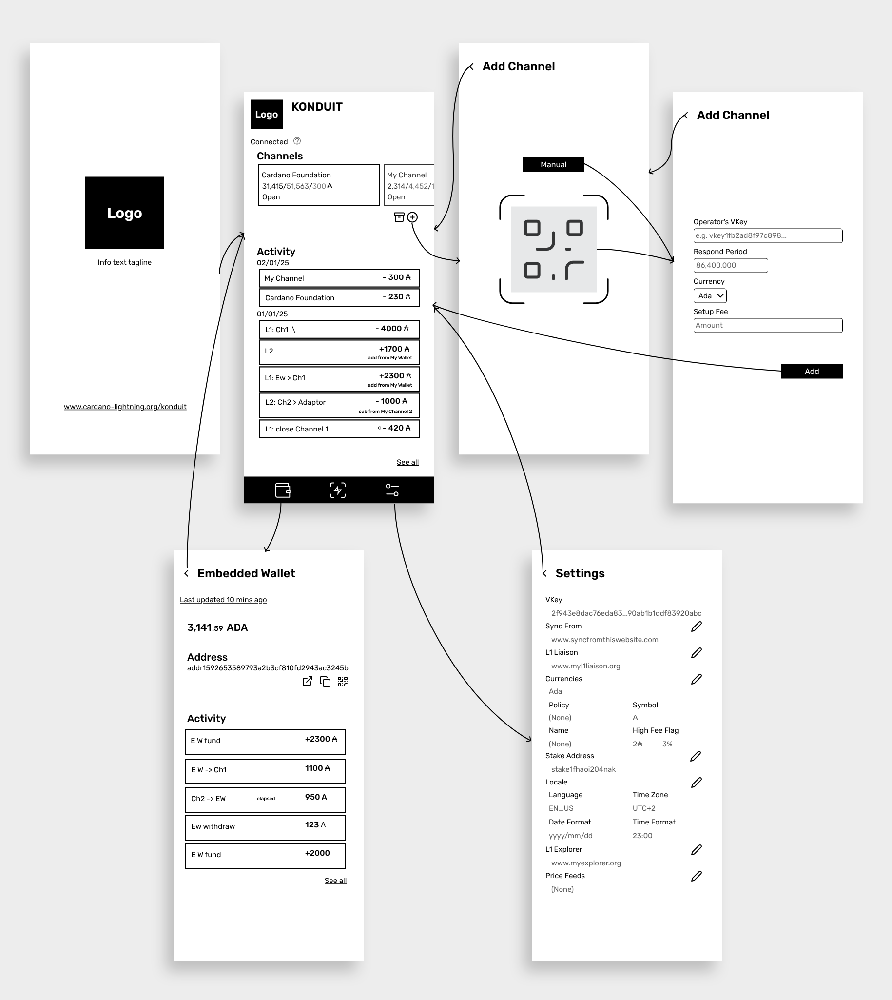
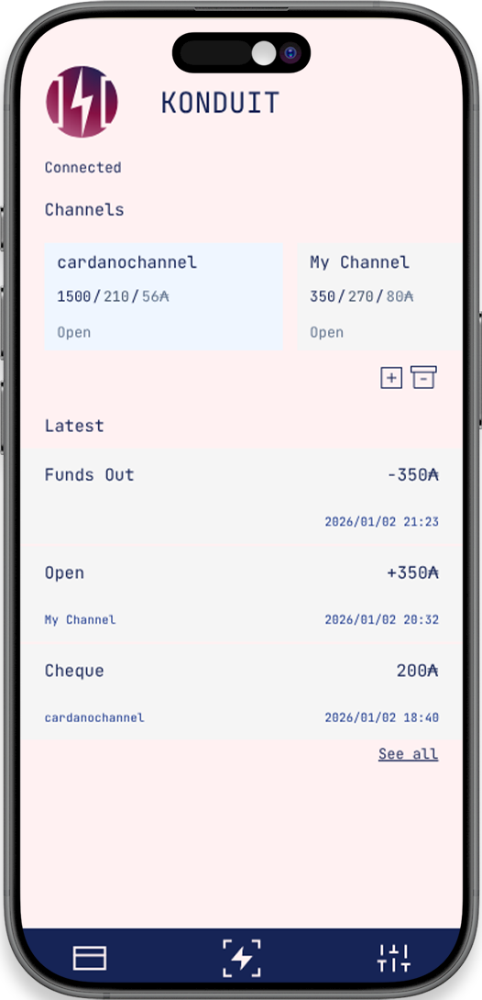
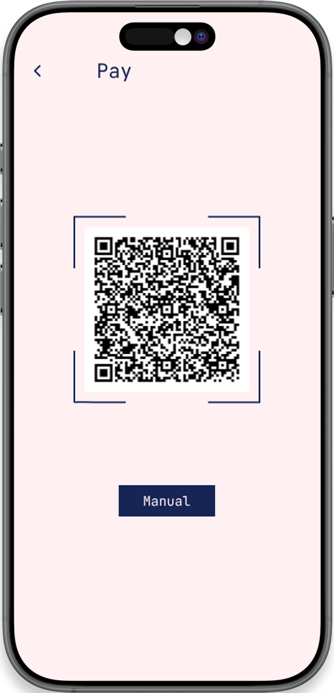

Konduit App — UX/UI Case Study
Crypto payment mobile app
UX/UI Designer | 2025
KonduitChannel needed a mobile app for crypto payments that felt as simple as a traditional banking app. The main challenge was making complex crypto actions accessible to users with different levels of technical experience.

Challenge:
Crypto actions are inherently complex and can be intimidating. The main challenge was reducing this complexity while maintaining accuracy and security.
Key considerations:
- Simplify navigation and flows
- Avoid overwhelming users with technical vocabulary
- Reduce cognitive load by referencing familiar banking app patterns
Wireframing and flow

Approach
- Iterated with the client to simplify flows and remove unnecessary steps
- Created low-fidelity wireframes to define hierarchy, navigation and core actions
- Mapped user journeys and identified information redundancies that could create confusion
- Designed flows based on familiar patterns from banking apps to reduce cognitive load

The final interface presents crypto payments in a familiar, banking-like environment, making difficult concepts feel easy and approachable.
Key outcomes:
- Clear navigation based on recognizable mental models
- Minimal, distraction-free screens
- A cohesive visual identity that supports clarity rather than competing with it
- Reduced complexity in user flows after collaborative iteration
